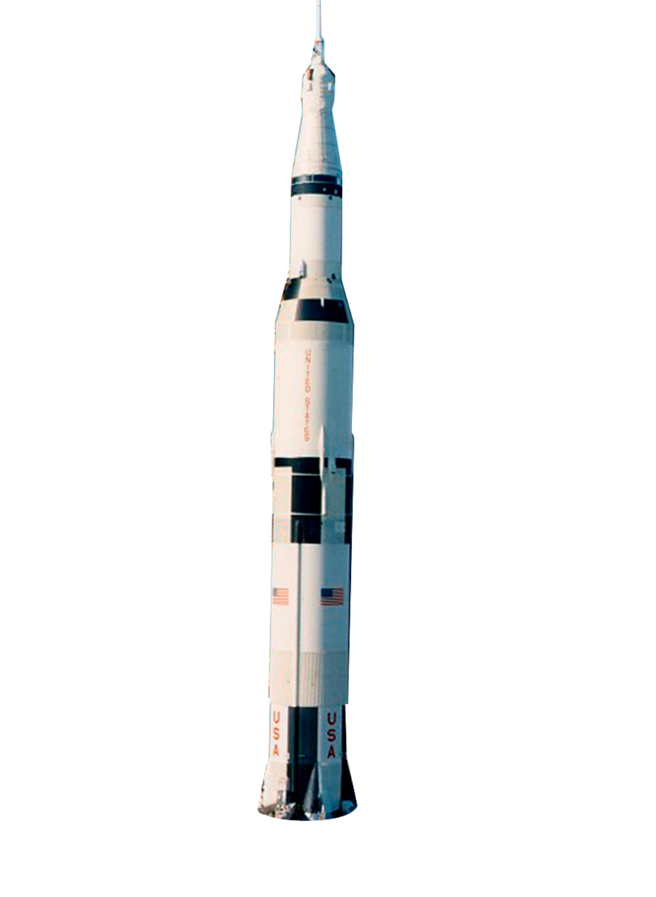

Saturno V
Información
La primera fase
La segunda fase
La tercera fase
Información
Es una de las máquinas más
impresionantes de la
historia
humana
Altura 1106m
Diámetro 101m
Masa 2970000kg^2
Carga útil a LEO 140000kg^3

Fue usados en las mismas misiones del Apolo
8 a Apolo 17
El 97% de su peso es combustible.
Puede llevar 118 toneladas a la
órbita baja